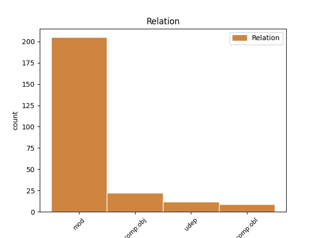
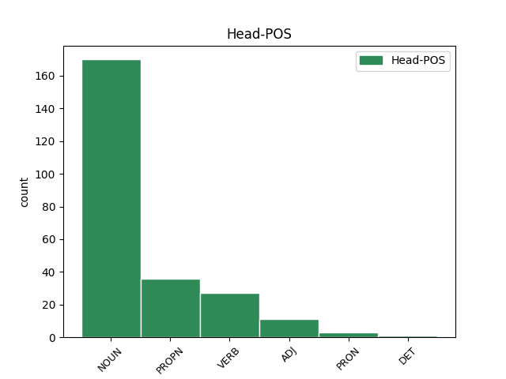
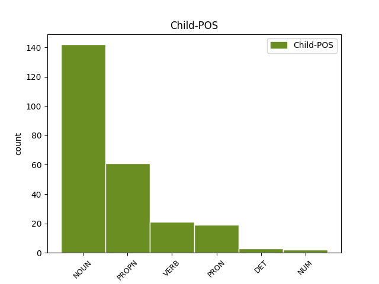

Distribution of features within this leaf



Agreement Rules sorted by frequency.
- When the dependent token is the modifer(mod) of the head token, and the head token is PROPN and the dependent token is NOUN.
1 Lietuvoje _ _ _ _ 0 _ _ _
2 populiari _ _ _ _ 0 _ _ _
3 nacistams _ _ _ _ 0 _ _ _
4 artimo _ _ _ _ 0 _ _ _
5 mąstytojo mąstytojas NOUN NN Case=Gen|Gender=Masc|Number=Sing 6 mod _ En=thinker
6 Carlo Carlas PROPN NNP Case=Gen|Gender=Masc|Number=Sing 0 _ _ _
7 Schmidto _ _ _ _ 0 _ _ _
8 doktorina _ _ _ _ 0 _ _ _
9 , _ _ _ _ 0 _ _ _
10 nors _ _ _ _ 0 _ _ _
11 jos _ _ _ _ 0 _ _ _
12 rėmėjai _ _ _ _ 0 _ _ _
13 kartais _ _ _ _ 0 _ _ _
14 gal _ _ _ _ 0 _ _ _
15 net _ _ _ _ 0 _ _ _
16 negirdėjo _ _ _ _ 0 _ _ _
17 to _ _ _ _ 0 _ _ _
18 vardo _ _ _ _ 0 _ _ _
19 . _ _ _ _ 0 _ _ _
1 Iš _ _ _ _ 0 _ _ _
2 viso _ _ _ _ 0 _ _ _
3 kurti _ _ _ _ 0 _ _ _
4 fetišą _ _ _ _ 0 _ _ _
5 , _ _ _ _ 0 _ _ _
6 stabą _ _ _ _ 0 _ _ _
7 iš _ _ _ _ 0 _ _ _
8 valstybės _ _ _ _ 0 _ _ _
9 – _ _ _ _ 0 _ _ _
10 nepriimtina _ _ _ _ 0 _ _ _
11 praktika _ _ _ _ 0 _ _ _
12 , _ _ _ _ 0 _ _ _
13 nes _ _ _ _ 0 _ _ _
14 ji _ _ _ _ 0 _ _ _
15 pažeidžia _ _ _ _ 0 _ _ _
16 pirmąjį _ _ _ _ 0 _ _ _
17 Dievo _ _ _ _ 0 _ _ _
18 įsakymą _ _ _ _ 0 _ _ _
19 , _ _ _ _ 0 _ _ _
20 privalomą _ _ _ _ 0 _ _ _
21 ir _ _ _ _ 0 _ _ _
22 krikščioniui _ _ _ _ 0 _ _ _
23 , _ _ _ _ 0 _ _ _
24 ir _ _ _ _ 0 _ _ _
25 šiaip _ _ _ _ 0 _ _ _
26 jau _ _ _ _ 0 _ _ _
27 mąstančiam mąstyti VERB VBNL Case=Dat|Definite=Ind|Gender=Masc|Number=Sing|Polarity=Pos|Reflex=No|Tense=Pres|Variant=Full|VerbForm=Part|Voice=Act 28 mod _ En=think
28 žmogui žmogus NOUN NN Case=Dat|Gender=Masc|Number=Sing 0 _ _ _
29 . _ _ _ _ 0 _ _ _
1 Ji _ _ _ _ 0 _ _ _
2 yra _ _ _ _ 0 _ _ _
3 anachroniškas _ _ _ _ 0 _ _ _
4 mentalinis _ _ _ _ 0 _ _ _
5 konstruktas _ _ _ _ 0 _ _ _
6 , _ _ _ _ 0 _ _ _
7 paveldėtas _ _ _ _ 0 _ _ _
8 iš _ _ _ _ 0 _ _ _
9 XIX _ _ _ _ 0 _ _ _
10 amžiaus amžius NOUN NN Case=Gen|Gender=Masc|Number=Sing 11 mod _ En=age
11 svajotojų svajotojas NOUN NN Case=Gen|Gender=Masc|Number=Plur 0 _ _ _
12 . _ _ _ _ 0 _ _ _
1 Antra _ _ _ _ 0 _ _ _
2 vertus _ _ _ _ 0 _ _ _
3 , _ _ _ _ 0 _ _ _
4 Europos Europa PROPN NNP Case=Gen|Gender=Fem|Number=Sing 5 mod _ En=Europe
5 valstybės valstybė NOUN NN Case=Gen|Gender=Fem|Number=Sing 0 _ _ _
6 priėmė _ _ _ _ 0 _ _ _
7 ir _ _ _ _ 0 _ _ _
8 tebepriima _ _ _ _ 0 _ _ _
9 daugybę _ _ _ _ 0 _ _ _
10 imigrantų _ _ _ _ 0 _ _ _
11 . _ _ _ _ 0 _ _ _
1 Sovietinę _ _ _ _ 0 _ _ _
2 sistemą _ _ _ _ 0 _ _ _
3 reikėjo _ _ _ _ 0 _ _ _
4 atmesti _ _ _ _ 0 _ _ _
5 dėl _ _ _ _ 0 _ _ _
6 trijų trys NUM CD Case=Gen|Gender=Fem 7 mod _ En=three
7 priežasčių priežastis NOUN NN Case=Gen|Gender=Fem|Number=Plur 0 _ _ _
8 . _ _ _ _ 0 _ _ _
1 Kad _ _ _ _ 0 _ _ _
2 ir _ _ _ _ 0 _ _ _
3 kokios _ _ _ _ 0 _ _ _
4 būtų _ _ _ _ 0 _ _ _
5 su _ _ _ _ 0 _ _ _
6 tuo _ _ _ _ 0 _ _ _
7 susijusios _ _ _ _ 0 _ _ _
8 problemos _ _ _ _ 0 _ _ _
9 , _ _ _ _ 0 _ _ _
10 kad _ _ _ _ 0 _ _ _
11 ir _ _ _ _ 0 _ _ _
12 kiek _ _ _ _ 0 _ _ _
13 jas _ _ _ _ 0 _ _ _
14 bandytų _ _ _ _ 0 _ _ _
15 išpūsti _ _ _ _ 0 _ _ _
16 rasistai _ _ _ _ 0 _ _ _
17 , _ _ _ _ 0 _ _ _
18 nei _ _ _ _ 0 _ _ _
19 viena _ _ _ _ 0 _ _ _
20 Europos Europa PROPN NNP Case=Gen|Gender=Fem|Number=Sing 21 mod _ En=Europe
21 Sąjungos sąjunga PROPN NNP Case=Gen|Gender=Fem|Number=Sing 0 _ _ _
22 tauta _ _ _ _ 0 _ _ _
23 nerodo _ _ _ _ 0 _ _ _
24 nutautėjimo _ _ _ _ 0 _ _ _
25 požymių _ _ _ _ 0 _ _ _
26 . _ _ _ _ 0 _ _ _
1 Jį _ _ _ _ 0 _ _ _
2 stiprina _ _ _ _ 0 _ _ _
3 nauji _ _ _ _ 0 _ _ _
4 istorijos _ _ _ _ 0 _ _ _
5 reiškiniai _ _ _ _ 0 _ _ _
6 – _ _ _ _ 0 _ _ _
7 didėjanti _ _ _ _ 0 _ _ _
8 nelygybė _ _ _ _ 0 _ _ _
9 , _ _ _ _ 0 _ _ _
10 naujoviška _ _ _ _ 0 _ _ _
11 beatodairiška _ _ _ _ 0 _ _ _
12 korupcija _ _ _ _ 0 _ _ _
13 , _ _ _ _ 0 _ _ _
14 pasaulinė _ _ _ _ 0 _ _ _
15 ekonominė _ _ _ _ 0 _ _ _
16 krizė _ _ _ _ 0 _ _ _
17 ir _ _ _ _ 0 _ _ _
18 dėl _ _ _ _ 0 _ _ _
19 to _ _ _ _ 0 _ _ _
20 atsiradusi _ _ _ _ 0 _ _ _
21 vartotojiškų _ _ _ _ 0 _ _ _
22 siekių _ _ _ _ 0 _ _ _
23 frustracija _ _ _ _ 0 _ _ _
24 ( _ _ _ _ 0 _ _ _
25 kaip _ _ _ _ 0 _ _ _
26 tik _ _ _ _ 0 _ _ _
27 dėl _ _ _ _ 0 _ _ _
28 tokių toks DET DT Case=Gen|Gender=Masc|Number=Plur 29 mod _ En=such
29 dalykų dalykas NOUN NN Case=Gen|Gender=Masc|Number=Plur 0 _ _ _
30 kadaise _ _ _ _ 0 _ _ _
31 atsirado _ _ _ _ 0 _ _ _
32 nacizmas _ _ _ _ 0 _ _ _
33 , _ _ _ _ 0 _ _ _
34 o _ _ _ _ 0 _ _ _
35 , _ _ _ _ 0 _ _ _
36 beje _ _ _ _ 0 _ _ _
37 , _ _ _ _ 0 _ _ _
38 ir _ _ _ _ 0 _ _ _
39 komunizmas _ _ _ _ 0 _ _ _
40 ) _ _ _ _ 0 _ _ _
41 . _ _ _ _ 0 _ _ _
1 Ši _ _ _ _ 0 _ _ _
2 kasmetinė _ _ _ _ 0 _ _ _
3 nominacija _ _ _ _ 0 _ _ _
4 skiriama _ _ _ _ 0 _ _ _
5 asmeniui _ _ _ _ 0 _ _ _
6 , _ _ _ _ 0 _ _ _
7 stojusiam _ _ _ _ 0 _ _ _
8 prieš _ _ _ _ 0 _ _ _
9 ksenofobijos _ _ _ _ 0 _ _ _
10 bei _ _ _ _ 0 _ _ _
11 antisemitizmo _ _ _ _ 0 _ _ _
12 , _ _ _ _ 0 _ _ _
13 kitaminčių _ _ _ _ 0 _ _ _
14 , _ _ _ _ 0 _ _ _
15 kitatikių _ _ _ _ 0 _ _ _
16 bei _ _ _ _ 0 _ _ _
17 kitataučių _ _ _ _ 0 _ _ _
18 persekiojimą _ _ _ _ 0 _ _ _
19 , _ _ _ _ 0 _ _ _
20 pasisakiusiam _ _ _ _ 0 _ _ _
21 prieš _ _ _ _ 0 _ _ _
22 smurto _ _ _ _ 0 _ _ _
23 , _ _ _ _ 0 _ _ _
24 prievartos _ _ _ _ 0 _ _ _
25 ir _ _ _ _ 0 _ _ _
26 radikalizmo _ _ _ _ 0 _ _ _
27 apraiškas _ _ _ _ 0 _ _ _
28 visuomeniniame visuomeninis ADJ JJL Case=Loc|Definite=Ind|Degree=Pos|Gender=Masc|Number=Sing 0 _ _ _
29 Lietuvos _ _ _ _ 0 _ _ _
30 gyvenime gyvenimas NOUN NN Case=Loc|Gender=Masc|Number=Sing 28 mod _ En=life|SpaceAfter=No
31 . _ _ _ _ 0 _ _ _
1 Jų _ _ _ _ 0 _ _ _
2 komedijos _ _ _ _ 0 _ _ _
3 neišliko _ _ _ _ 0 _ _ _
4 , _ _ _ _ 0 _ _ _
5 tuo _ _ _ _ 0 _ _ _
6 tarpu _ _ _ _ 0 _ _ _
7 „ _ _ _ _ 0 _ _ _
8 Debesys Debesis NOUN NN Case=Nom|Gender=Masc|Number=Plur 10 comp:obj _ En=cloud|SpaceAfter=No
9 “ _ _ _ _ 0 _ _ _
10 skaitomi skaityti VERB VBNL Case=Nom|Definite=Ind|Gender=Masc|Number=Plur|Polarity=Pos|Reflex=No|Tense=Pres|VerbForm=Part|Voice=Act 0 _ _ _
11 ligi _ _ _ _ 0 _ _ _
12 šiol _ _ _ _ 0 _ _ _
13 . _ _ _ _ 0 _ _ _
1 Komedijos _ _ _ _ 0 _ _ _
2 centre _ _ _ _ 0 _ _ _
3 – _ _ _ _ 0 _ _ _
4 sodietis _ _ _ _ 0 _ _ _
5 Strepsiadas _ _ _ _ 0 _ _ _
6 , _ _ _ _ 0 _ _ _
7 šalia _ _ _ _ 0 _ _ _
8 kurio kuris PRON WPA Case=Gen|Gender=Masc|Number=Sing 9 mod _ En=which
9 namų namai NOUN NN Case=Gen|Gender=Masc|Number=Plur 0 _ _ _
10 įsirengė _ _ _ _ 0 _ _ _
11 „ _ _ _ _ 0 _ _ _
12 mąstyklą _ _ _ _ 0 _ _ _
13 “ _ _ _ _ 0 _ _ _
14 filosofas _ _ _ _ 0 _ _ _
15 Sokratas _ _ _ _ 0 _ _ _
16 ( _ _ _ _ 0 _ _ _
17 tada _ _ _ _ 0 _ _ _
18 jis _ _ _ _ 0 _ _ _
19 dar _ _ _ _ 0 _ _ _
20 buvo _ _ _ _ 0 _ _ _
21 gyvas _ _ _ _ 0 _ _ _
22 ir _ _ _ _ 0 _ _ _
23 greičiausiai _ _ _ _ 0 _ _ _
24 matė _ _ _ _ 0 _ _ _
25 spektaklį _ _ _ _ 0 _ _ _
26 ) _ _ _ _ 0 _ _ _
27 . _ _ _ _ 0 _ _ _
1 Jam _ _ _ _ 0 _ _ _
2 viskas _ _ _ _ 0 _ _ _
3 yra _ _ _ _ 0 _ _ _
4 aišku _ _ _ _ 0 _ _ _
5 , _ _ _ _ 0 _ _ _
6 jis _ _ _ _ 0 _ _ _
7 lengvai _ _ _ _ 0 _ _ _
8 skiria _ _ _ _ 0 _ _ _
9 gėrį _ _ _ _ 0 _ _ _
10 ir _ _ _ _ 0 _ _ _
11 blogį _ _ _ _ 0 _ _ _
12 , _ _ _ _ 0 _ _ _
13 juodą juodas NOUN NN Case=Acc|Gender=Masc|Number=Sing 15 comp:obj _ En=black
14 ir _ _ _ _ 0 _ _ _
15 baltą baltas NOUN NN Case=Acc|Gender=Masc|Number=Sing 0 _ _ _
16 . _ _ _ _ 0 _ _ _
1 Tų _ _ _ _ 0 _ _ _
2 laikų _ _ _ _ 0 _ _ _
3 entuziazmas _ _ _ _ 0 _ _ _
4 buvo _ _ _ _ 0 _ _ _
5 gražus _ _ _ _ 0 _ _ _
6 , _ _ _ _ 0 _ _ _
7 o _ _ _ _ 0 _ _ _
8 sudėtos _ _ _ _ 0 _ _ _
9 aukos _ _ _ _ 0 _ _ _
10 vertos vertas ADJ JJL Case=Gen|Definite=Ind|Degree=Pos|Gender=Fem|Number=Sing 0 _ _ _
11 didelės _ _ _ _ 0 _ _ _
12 pagarbos pagarba NOUN NN Case=Gen|Gender=Fem|Number=Sing 10 comp:obj _ En=respect|SpaceAfter=No
13 . _ _ _ _ 0 _ _ _
1 Ne _ _ _ _ 0 _ _ _
2 tik _ _ _ _ 0 _ _ _
3 žydų _ _ _ _ 0 _ _ _
4 , _ _ _ _ 0 _ _ _
5 bet _ _ _ _ 0 _ _ _
6 ir _ _ _ _ 0 _ _ _
7 airių _ _ _ _ 0 _ _ _
8 dauguma _ _ _ _ 0 _ _ _
9 gyvena _ _ _ _ 0 _ _ _
10 diasporoje _ _ _ _ 0 _ _ _
11 , _ _ _ _ 0 _ _ _
12 ir _ _ _ _ 0 _ _ _
13 tai _ _ _ _ 0 _ _ _
14 anaiptol _ _ _ _ 0 _ _ _
15 nekenkia _ _ _ _ 0 _ _ _
16 nei _ _ _ _ 0 _ _ _
17 Izraeliui Izraelis PROPN NNP Case=Dat|Gender=Masc|Number=Sing 0 _ _ _
18 , _ _ _ _ 0 _ _ _
19 nei _ _ _ _ 0 _ _ _
20 Airijai Airija PROPN NNP Case=Dat|Gender=Fem|Number=Sing 17 comp:obj _ En=Airija|SpaceAfter=No
21 . _ _ _ _ 0 _ _ _
1 Bandymai _ _ _ _ 0 _ _ _
2 jį _ _ _ _ 0 _ _ _
3 modifikuoti _ _ _ _ 0 _ _ _
4 ar _ _ _ _ 0 _ _ _
5 kvestionuoti _ _ _ _ 0 _ _ _
6 apibrėžimas apibrėžti VERB VBNH Case=Nom|Definite=Ind|Gender=Masc|Number=Plur|Polarity=Pos|Reflex=No|Tense=Pres|VerbForm=Part|Voice=Pass 0 _ _ _
7 kaip _ _ _ _ 0 _ _ _
8 valstybės _ _ _ _ 0 _ _ _
9 išdavimas išdavimas NOUN NN Case=Nom|Gender=Masc|Number=Sing 6 udep _ En=betrace|SpaceAfter=No
10 , _ _ _ _ 0 _ _ _
11 baustinas _ _ _ _ 0 _ _ _
12 griežčiausiomis _ _ _ _ 0 _ _ _
13 bausmėmis _ _ _ _ 0 _ _ _
14 ligi _ _ _ _ 0 _ _ _
15 sušaudymo _ _ _ _ 0 _ _ _
16 imtinai _ _ _ _ 0 _ _ _
17 . _ _ _ _ 0 _ _ _
1 Žinoma _ _ _ _ 0 _ _ _
2 , _ _ _ _ 0 _ _ _
3 tai _ _ _ _ 0 _ _ _
4 tinkamiausias _ _ _ _ 0 _ _ _
5 būdas _ _ _ _ 0 _ _ _
6 : _ _ _ _ 0 _ _ _
7 todėl _ _ _ _ 0 _ _ _
8 visą _ _ _ _ 0 _ _ _
9 savo _ _ _ _ 0 _ _ _
10 sąmoningą _ _ _ _ 0 _ _ _
11 gyvenimą _ _ _ _ 0 _ _ _
12 pasisakydavau _ _ _ _ 0 _ _ _
13 ir _ _ _ _ 0 _ _ _
14 dabar _ _ _ _ 0 _ _ _
15 pasisakau _ _ _ _ 0 _ _ _
16 už _ _ _ _ 0 _ _ _
17 nepriklausomą nepriklausyti VERB VBNL Case=Acc|Definite=Ind|Gender=Masc|Number=Sing|Polarity=Neg|Reflex=No|Tense=Pres|VerbForm=Part|Voice=Pass 18 mod _ En=substantive
18 Lietuvą Lietuva PROPN NNP Case=Acc|Gender=Fem|Number=Sing 0 _ _ _
19 . _ _ _ _ 0 _ _ _
1 Į _ _ _ _ 0 _ _ _
2 tai _ _ _ _ 0 _ _ _
3 man _ _ _ _ 0 _ _ _
4 bus _ _ _ _ 0 _ _ _
5 atsakyta _ _ _ _ 0 _ _ _
6 : _ _ _ _ 0 _ _ _
7 „ _ _ _ _ 0 _ _ _
8 čia _ _ _ _ 0 _ _ _
9 ne _ _ _ _ 0 _ _ _
10 mes mes PRON PRP Case=Nom|Number=Plur|Person=1 0 _ _ _
11 vieni vienas DET DT Case=Nom|Gender=Masc|Number=Plur 10 mod _ En=single
12 kalti _ _ _ _ 0 _ _ _
13 “ _ _ _ _ 0 _ _ _
14 . _ _ _ _ 0 _ _ _
Disagree Examples:
1 Tolerancijos tolerancija NOUN NN Case=Gen|Gender=Fem|Number=Sing 2 mod _ En=tolerance
2 žmogumi žmogus NOUN NN Case=Ins|Gender=Masc|Number=Sing 0 _ _ _
3 paskelbta _ _ _ _ 0 _ _ _
4 rašytoja _ _ _ _ 0 _ _ _
5 V. _ _ _ _ 0 _ _ _
6 Juknaitė _ _ _ _ 0 _ _ _
1 Tolerancijos _ _ _ _ 0 _ _ _
2 žmogumi žmogus NOUN NN Case=Ins|Gender=Masc|Number=Sing 3 comp:obl _ En=person
3 paskelbta paskelbti VERB VBNL Case=Nom|Definite=Ind|Gender=Fem|Number=Sing|Polarity=Pos|Reflex=No|Tense=Past|VerbForm=Part|Voice=Pass 0 _ _ _
4 rašytoja _ _ _ _ 0 _ _ _
5 V. _ _ _ _ 0 _ _ _
6 Juknaitė _ _ _ _ 0 _ _ _
1 Rašytoja _ _ _ _ 0 _ _ _
2 Vanda _ _ _ _ 0 _ _ _
3 Juknaitė _ _ _ _ 0 _ _ _
4 šeštadienį šeštadienis NOUN NN Case=Acc|Gender=Masc|Number=Sing 9 udep _ En=Saturday
5 Vytauto _ _ _ _ 0 _ _ _
6 Didžiojo _ _ _ _ 0 _ _ _
7 universitete _ _ _ _ 0 _ _ _
8 Kaune _ _ _ _ 0 _ _ _
9 paskelbta paskelbti VERB VBNL Case=Nom|Definite=Ind|Gender=Fem|Number=Sing|Polarity=Pos|Reflex=No|Tense=Past|VerbForm=Part|Voice=Pass 0 _ _ _
10 2016-ųjų _ _ _ _ 0 _ _ _
11 Tolerancijos _ _ _ _ 0 _ _ _
12 žmogumi _ _ _ _ 0 _ _ _
13 . _ _ _ _ 0 _ _ _
1 Rašytoja _ _ _ _ 0 _ _ _
2 Vanda _ _ _ _ 0 _ _ _
3 Juknaitė _ _ _ _ 0 _ _ _
4 šeštadienį _ _ _ _ 0 _ _ _
5 Vytauto vytautas PROPN NNP Case=Gen|Gender=Masc|Number=Sing 7 mod _ En=Vytautus
6 Didžiojo _ _ _ _ 0 _ _ _
7 universitete universitetas NOUN NN Case=Loc|Gender=Masc|Number=Sing 0 _ _ _
8 Kaune _ _ _ _ 0 _ _ _
9 paskelbta _ _ _ _ 0 _ _ _
10 2016-ųjų _ _ _ _ 0 _ _ _
11 Tolerancijos _ _ _ _ 0 _ _ _
12 žmogumi _ _ _ _ 0 _ _ _
13 . _ _ _ _ 0 _ _ _
1 Rašytoja _ _ _ _ 0 _ _ _
2 Vanda _ _ _ _ 0 _ _ _
3 Juknaitė _ _ _ _ 0 _ _ _
4 šeštadienį _ _ _ _ 0 _ _ _
5 Vytauto _ _ _ _ 0 _ _ _
6 Didžiojo _ _ _ _ 0 _ _ _
7 universitete universitetas NOUN NN Case=Loc|Gender=Masc|Number=Sing 9 udep _ En=university
8 Kaune _ _ _ _ 0 _ _ _
9 paskelbta paskelbti VERB VBNL Case=Nom|Definite=Ind|Gender=Fem|Number=Sing|Polarity=Pos|Reflex=No|Tense=Past|VerbForm=Part|Voice=Pass 0 _ _ _
10 2016-ųjų _ _ _ _ 0 _ _ _
11 Tolerancijos _ _ _ _ 0 _ _ _
12 žmogumi _ _ _ _ 0 _ _ _
13 . _ _ _ _ 0 _ _ _